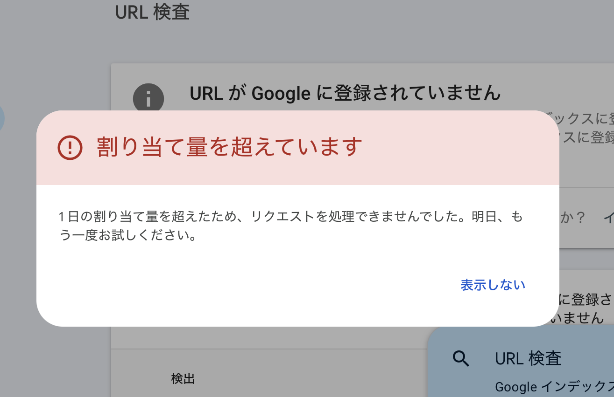
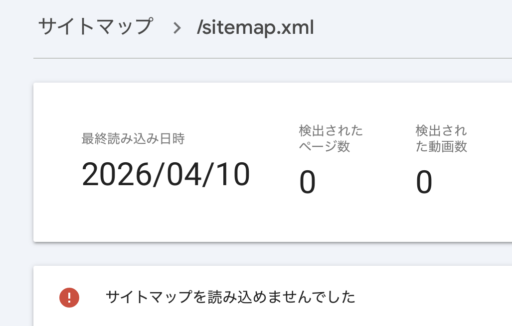
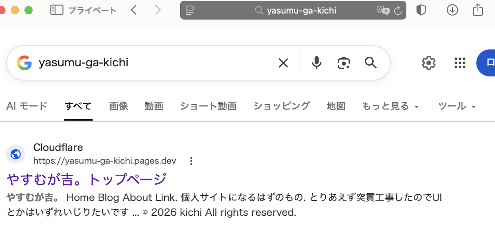

作ったwebサイトってほっといたら検索エンジンに引っかかるんじゃないんだね
タイトルまんまです。サブタイ「google search consoleの使い方」
google search consoleとは！
Google検索において、自分が登録したサイトがどれくらい見られてるとかがわかるらしいよ。
まあ私もよくわかってないのでこれを見てください→https://search.google.com/search-console/about
使用に至った経緯
転学に関するブログを先日書いたのですがgoogleとかで検索しても出てこないんですよね。
転学に関する情報集めに苦労した身としても、今後いるかもしれない転学希望の民がネットで検索したときに検索ヒットして欲しいわけですよ。
それで「ホームページ 検索 ヒットしない」とかで検索したんですよ。そしたら…
何もしなかったらwebサイトってGoogleくんに認知してもらえないの！？
どうりで昔個人サイト検索用にサーチエンジンとかあったわけだよ。（古のオタクの話なのでわからない人はスルーしてね）
なんか全ての新規作成サイトが検索結果に載らないわけじゃないっぽいですが、このサイトは載らなかったのでGoogle search consoleとやらを使うことにしました。
どうやって使うんじゃい
※googleアカウントがある＆ログイン済みであることを前提として話を進めます
手順その1
まずgoogleくんが登録するwebサイトが自分のだよーってのを確認します。ドメインorURLを入力してねという画面が出るので好きな方を選んでください。（スクショ撮り忘れた）ドメインの方はなんかよくわからなかったので私はURLで進めました。「続行」を押すと、HTMLファイルをダウンロードしてうんぬんかんぬん…と出るのですがwebサイト初心者なのでなーんもわからん。
ということで我らがチャットGPTくんに聞いてみたところ、ダウンロードしたHTMLファイルをwebサイトのフォルダにinすればOKとのことでした。
webサイトのフォルダはあれだよ、VSCodeとかでページ編集するときに開くやつだよ（あれなんていうの）
手順その2
さっきの所有確認がうまくいくと、「サマリー」とか「分析情報」とかのタブが左側に出てきます。（出てこなかったら左上の3本線クリックしてね）そこで「URL検査」をクリック→上部の検索バーにURLを入力するとURLがgoogleに登録されているかがわかります。登録されていない場合は「インデックス登録をリクエスト」というボタンを押したら登録できるか審査してくれるのですが…

なんでやねん。
サーチコンソール使い始めてからまだ何もしてませんけど？？？？なんで？？？？
まあチャッピーくんに聞いてもこれは待つしかないみたいなので、別の方法を試すことにしました。
手順その2改
どうやらサイトマップなるものを登録すると検索でサイトが出てくるようになるらしい。ということでVSCodeのcopilotくんにサイトマップを作ってもらいました。コパイまだ使い慣れてなさすぎて出して欲しいもの出してもらうのに時間かかった。せっかく学割ライセンスあるので活用できるようになりたいですね。
それでね、サーチコンソールにね、サイトマップを登録したんですよ。

だからなんでやねん。
チャッピー曰く時間がかかるらしいです。これも待つしかないんだとよ。
ちなみに1日経っても読み込まれていません。なぜだGoogle。
待ちました
半日後、URL検査のページでなぜか表示が「URLはGoogleに登録されています」に変わっていました。登録できたのは良かったけども！！！！！正しい流れであろう「URL登録をリクエスト」→「なんかの審査」→「登録できました！」の流れを見ることができなかったのは残念です。
ちなみにちゃんと検索で出てきましたよ↓

「やすむが吉。」とか「やすむが吉 ホームページ」とかだと出てこなかったけどまあよしとしましょう。
あと一応プライベートブラウズで確認したけどちゃんと検索履歴とか過去にアクセスしたページの影響はなくなっているのかは謎です。
そもそも一番検索で出てきてほしい転学類の記事についてもいずれURL検査する予定です。サイトマップ動いてないからトップページの登録だけだと検索に載らない気がするんよね。
ちなみに今日URL検査しようとした結果…
Googleお前ってやつは────💢！！！！！！！（終）